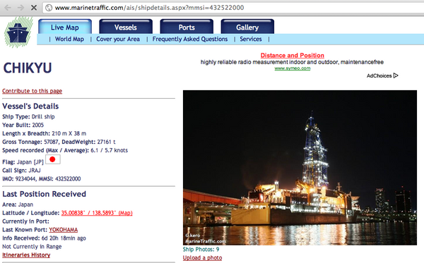
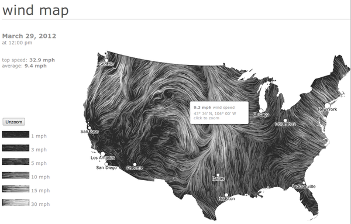
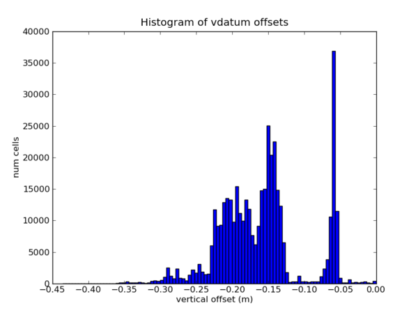
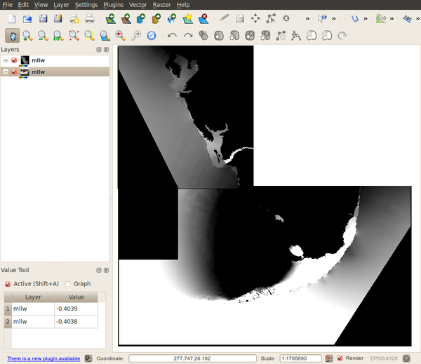
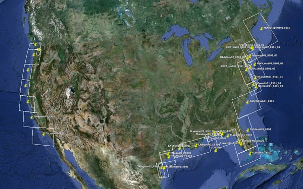
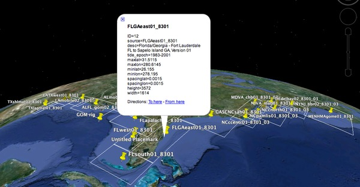
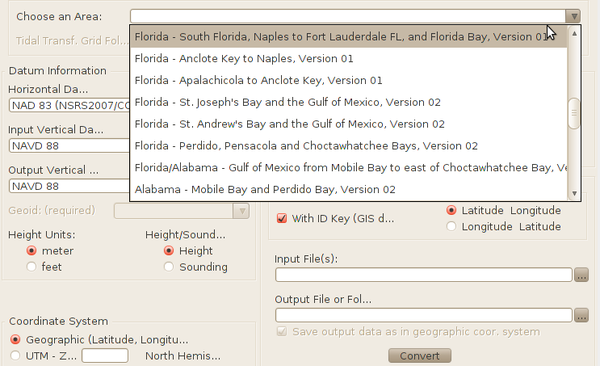
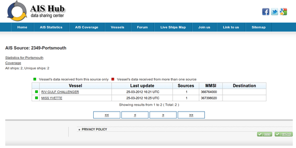
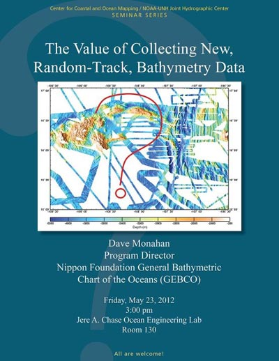
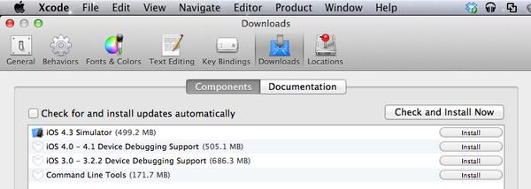

03.31.2012 20:18
Chikyu about to set sail
Monica is about to set sail on the
Chikyu from Japan. This is a project to drill through the fault
that caused the massive earthquake and tsunami just over a year
ago. The departure will be on USTREAM from the expedition home
page.
http://www.jamstec.go.jp/chikyu/exp343/e/
MarineTraffic.com for MMSI 432522000
http://www.jamstec.go.jp/chikyu/exp343/e/

MarineTraffic.com for MMSI 432522000
03.30.2012 10:28
Right Whale iPad app
Woohoo!
See also:
NewsWise: New Right Whale Conservation App for iPads to Be Unveiled on April 4
EarthNC Twitter: Calling All Right Whales!
FOR IMMEDIATE RELEASE Contact: Anne Smrcina, SBNMS, (781) 545-8026 x204
March 28, 2012 or 781-738-2242 (cell)
New Right Whale Conservation App for iPads to be Unveiled on April 4
Calling All Right Whales! A new iPad and iPhone application designed
to help protect North Atlantic right whales will be unveiled at a
press conference organized by a consortium of government agencies,
academic institutions, nonprofit organizations and industry
representatives. The app is being offered free to the public to
enhance conservation of critically endangered whales along the East
Coast of the United States using today's web and mobile communications
technologies.
WHAT: New iPad/ iPhone app
WHEN: Wednesday, April 4th
WHERE: Exchange Conference Center at the Historic Boston Fish Pier
212 Northern Avenue, South Boston
WHO: Monica Medina, NOAA, Principal Deputy Undersecretary for Oceans and Atmosphere
Daniel Basta, Director, NOAA Office of National Marine Sanctuaries
Dr. David Wiley, Research Coordinator, NOAA Stellwagen Bank National Marine Sanctuary,
project leader
Dr. Christopher Clark, Director, Bioacoustics Research Program, Cornell University
Patrick Ramage, Director, Global Whale Program, International Fund for Animal Welfare
Michael Leone, Port Director, Massachusetts Port Authority
Captain Peter DeCola, Chief of Law Enforcement, First District, U.S. Coast Guard
Brad Winney, Co-Founder, EarthNC, Inc.
Michael Trammel, Director, Environmental Affairs, Excelerate Energy LP
Peter Dragone, President, EOM Offshore
Now a vessel operator can install the new app on an iPad,
automatically receive the latest reports on right whale detections and
be notified whenever their vessel enters a seasonal or temporary
management area. This will greatly reduce the time and effort required
to alert vessel operators that whales are in the area, thus reducing
the chance of a vessel striking and injuring a whale. The app will be
demonstrated at the press conference and on the bridge of the Gateway
Endeavor, which will be docked at the Fish Pier and available for
media tours.
B-roll video footage and still images of the app in use will be
available to media representatives. Spokespersons from all
participating organizations will be available for interviews.
Limited free parking for media will be available at the Boston Fish
Pier. Additional free parking and a shuttle bus will be available at
Massport's Flats Lot (behind the Seaport Hotel at the intersection of
Congress Street and D Street). For GPS users, the Seaport Hotel is
located at 200 Seaport Blvd.
See also:
NewsWise: New Right Whale Conservation App for iPads to Be Unveiled on April 4
EarthNC Twitter: Calling All Right Whales!
03.29.2012 13:48
WebGL wind particle visualization
I forget which style of particle
tracing visualization style Colin calls this, but http://hint.fm/wind/ has a very pretty
HTML5/WebGL visualization of wind patterns in the US. Double
clicking lets you zoom in, but I can't figure out how to zoom out.
Also, it's missing the altitude for these winds. Why this style has
been around for a long time, it's nice because: 1) it's live on the
web and 2) is webgl.
Turns out that this was created by Fernanda Viegas and Martin Wattenberg of Google. Thanks to Rob Almeida for the clarifying details! What Does the Wind "Look" Like.

Turns out that this was created by Fernanda Viegas and Martin Wattenberg of Google. Thanks to Rob Almeida for the clarifying details! What Does the Wind "Look" Like.
03.29.2012 13:01
VDatum GTX files in QGIS and GDAL
I should have guess that Frank had
already taken a look at all this before. He showed me how to take a
look at the conversion grids in GDAL and since QGIS is built on top
of GDAL, you can see the grids right in QGIS. First, checking out a
grid with gdal:
I then loaded two adjacent gtx files and compared the values along the edges. They are the same within 1mm. Note that I gave the two gtx grids slightly different color ramps to make it easier to tell them apart.
Note: It's a bummer that the VDatum team didn't put in a "magic" file identifier at the beginning of the GTX file to allow the unix file command to identify these files. We have to count on the file structure and ".gtx" extension. We must look at the directory name to get the version number for the grid. I highly recommend to anyone listening that when you design a file format, make sure you also put that infomation inside the file.
gdalinfo TXlaggal01_8301/mhw.gtx
Driver: GTX/NOAA Vertical Datum .GTX
Files: TXlaggal01_8301/mhw.gtx
Size is 2446, 1742
Coordinate System is:
GEOGCS["WGS 84",
DATUM["WGS_1984",
SPHEROID["WGS 84",6378137,298.257223563,
AUTHORITY["EPSG","7030"]],
TOWGS84[0,0,0,0,0,0,0],
AUTHORITY["EPSG","6326"]],
PRIMEM["Greenwich",0,
AUTHORITY["EPSG","8901"]],
UNIT["degree",0.0174532925199433,
AUTHORITY["EPSG","9108"]],
AUTHORITY["EPSG","4326"]]
Origin = (263.124500000000012,29.890499999999999)
Pixel Size = (0.001000000000000,-0.001000000000000)
Corner Coordinates:
Upper Left ( 263.125, 29.890) (263d 7'28.20"E, 29d53'25.80"N)
Lower Left ( 263.125, 28.148) (263d 7'28.20"E, 28d 8'54.60"N)
Upper Right ( 265.571, 29.890) (265d34'13.80"E, 29d53'25.80"N)
Lower Right ( 265.571, 28.148) (265d34'13.80"E, 28d 8'54.60"N)
Center ( 264.348, 29.020) (264d20'51.00"E, 29d 1'10.20"N)
Band 1 Block=2446x1 Type=Float32, ColorInterp=Undefined
27.60056127.600561
The GTX format is documented in the gdal code:
float64 latitude_of_origin float64 longitude_of_origin (0-360) float64 cell size (x?y?) float64 cell size (x?y?) int32 length in pixels int32 width in pixels Data ==== float32 * width in pixels * length in pixelsI did a quick check on the data using python to make sure the files made sense. This is not the kind of code that I would write for production!
ipython -pylab
gtx = open('mllw.gtx').read()
lat,lon,x_size, y_size = struct.unpack_from('>4d',gtx)
wide, high = struct.unpack_from('>2i',gtx,4*8)
grid = struct.unpack_from('>'+str(wide*high)+'f', gtx, 4*8 + 2*4)
real_data = []
for i in range(len(grid)):
# No data appears to be -88.8888
if grid[i] > -88:
real_data.append(grid[i])
hist(real_data,bins=100)
title('Histogram of vdatum offsets')
xlabel('vertical offset (m)')
ylabel('num cells')

I then loaded two adjacent gtx files and compared the values along the edges. They are the same within 1mm. Note that I gave the two gtx grids slightly different color ramps to make it easier to tell them apart.

Note: It's a bummer that the VDatum team didn't put in a "magic" file identifier at the beginning of the GTX file to allow the unix file command to identify these files. We have to count on the file structure and ".gtx" extension. We must look at the directory name to get the version number for the grid. I highly recommend to anyone listening that when you design a file format, make sure you also put that infomation inside the file.
file * dtl.gtx: data mhhw.gtx: data mhw.gtx: data mllw.gtx: data mlw.gtx: data mtl.gtx: data tss.gtx: data TXlaggal01_8301.bnd: ASCII text TXlaggal01_8301.met: ASCII text, with CRLF line terminators
03.28.2012 12:08
Python dates, times, datetime, pytz, and more
For some reason, this did talk did
not make it into the PyCon 2012 YouTube Playlist, but anyone
doing science and using python should watch the video. And if you
are using a different language, you might want to watch the video
anyways. Dates and time are a pain.
03.27.2012 17:43
Fun with decompiling Java jar files
To try to figure out what was going
on with the VDatum.jar program, I ended up pulling it a part. Here
is a little of what I found. First I unpacked the jar file, which
really is just a zip archive:
unzip ../VDatum.jar Archive: ../VDatum.jar creating: META-INF/ extracting: META-INF/MANIFEST.MF creating: gov/ creating: gov/noaa/ creating: gov/noaa/ngs/ creating: gov/noaa/ngs/vdatum/ extracting: gov/noaa/ngs/vdatum/Area.class extracting: gov/noaa/ngs/vdatum/BrowserLaunch.class extracting: gov/noaa/ngs/vdatum/VDatum$VFileConvert.class extracting: gov/noaa/ngs/vdatum/VDatum.class extracting: gov/noaa/ngs/vdatum/VDatum.gif extracting: gov/noaa/ngs/vdatum/VDatum_CMD.class extracting: gov/noaa/ngs/vdatum/VDatum_GUI$1.class extracting: gov/noaa/ngs/vdatum/VDatum_GUI$10.class ... extracting: gov/noaa/ngs/vdatum/VDatum_GUI$9.class extracting: gov/noaa/ngs/vdatum/VDatum_GUI.class extracting: gov/noaa/ngs/vdatum/VDatum_Main$1.class extracting: gov/noaa/ngs/vdatum/VDatum_Main$WorkFolderGetter.class extracting: gov/noaa/ngs/vdatum/VDatum_Main.classMy goal was to figure out what was wrong with the vert and horiz info command line options described like so on the -help web page:
-help Displays the help file on screen -checkupdate Checks for software update. Note: an internet connection is required. -allinfo Displays all information such as Disclaimer, available VDatum areas, etc.. -disclaimer Displays the Disclaimer -areainfo Displays information of available VDatum project areas -horizontalinfo Displays information of supported horizontal datums -verticalinfo Displays information of supported vertical datums -geoidinfo Displays information of supported Geoid modelsI tried first with the unix string command that returns the readable text in a binary file:
strings *.class | egrep 'vertical|horizontal' -horizontaldatuminfo -verticaldatuminfo N* vertically transform geospatial data among a variety of tidal, orthometric * N* and ellipsoidal vertical datums - allowing users to convert their data from* N* different horizontal/vertical references into a common system and enabling * N* Although many of the vertical datum transformations between the North * N* vertically transform geospatial data among a variety of tidal, orthometric * N* and ellipsoidal vertical datums - allowing users to convert their data from* N* different horizontal/vertical references into a common system and enabling * N* Although many of the vertical datum transformations between the North *That showed me that there was a typo in the web page. Or it is describing a new or older version of the program. A nice illustration of why it is good practice for command line help to be generated from the actually command line option code. I wanted to look a bit closer to see if there were other options I was missing, so I decompiled the class files into java (this doesn't fully work, but it is good enough).
wget http://www.varaneckas.com/sites/default/files/jad/jad158e.linux.static.zip for file in *.class; do ./jad -sjava $file done Parsing Area.class...The class file version is 49.0 (only 45.3, 46.0 and 47.0 are supported) Generating Area.java Parsing BrowserLaunch.class...The class file version is 49.0 (only 45.3, 46.0 and 47.0 are supported) Generating BrowserLaunch.java Parsing VDatum.class...The class file version is 49.0 (only 45.3, 46.0 and 47.0 are supported) Parsing inner class VDatum$VFileConvert.class...The class file version is 49.0 (only 45.3, 46.0 and 47.0 are supported) Generating VDatum.java Parsing VDatum_CMD.class...The class file version is 49.0 (only 45.3, 46.0 and 47.0 are supported) Generating VDatum_CMD.java ... ) Generating VDatum_Main$WorkFolderGetter.java Parsing VDatum$VFileConvert.class...The class file version is 49.0 (only 45.3, 46.0 and 47.0 are supported) Generating VDatum$VFileConvert.java Couldn't resolve all access$ methods in method runThen I used grep to search for options.
grep 'verticaldatum' *.java
VDatum_CMD.java: if(scmd.equalsIgnoreCase("-verticaldatuminfo"))
egrep '[(]"-' VDatum_CMD.java
if(scmd.equalsIgnoreCase("-help"))
if(scmd.equalsIgnoreCase("-disclaimer"))
if(scmd.equalsIgnoreCase("-allinfo"))
if(scmd.equalsIgnoreCase("-areainfo"))
if(scmd.equalsIgnoreCase("-horizontaldatuminfo"))
if(scmd.equalsIgnoreCase("-verticaldatuminfo"))
if(scmd.equalsIgnoreCase("-geoidinfo"))
if(scmd.equalsIgnoreCase("-coorinfo"))
if(scmd.equalsIgnoreCase("-checkupdate"))
if(vdatumcmd[5].equalsIgnoreCase("-m") || vdatumcmd[5].equalsIgnoreCase("-meter"))
if(vdatumcmd[6].equalsIgnoreCase("-s") || vdatumcmd[6].equalsIgnoreCase("-sounding"))
if(vdatumcmd[10].equalsIgnoreCase("-p") || vdatumcmd[10].equalsIgnoreCase("-point"))
Looking at the code, you can see the argument parsing logic. Not
that the original code might not really look like this as compiling
and decompiling can change things around.
for(; i < cmdlen; i++)
{
String scmd = cmd[i].trim();
if(scmd.equalsIgnoreCase("-help"))
{
getHelp();
continue;
}
if(scmd.equalsIgnoreCase("-disclaimer"))
{
displayDisclaimer();
continue;
}
if(scmd.equalsIgnoreCase("-allinfo"))
{
displayDisclaimer();
getAreaInfo();
getHorizontalInfo();
getVerticalInfo();
getGeoidInfo();
getCoorInfo();
continue;
}
And looking at the getHelp function, it's pretty clear what it's
doing:
private void getHelp()
{
BrowserLaunch.openURL("http://vdatum.noaa.gov/docs/userguide_cmd.html");
}
03.27.2012 10:58
Where are the vdatum zones?
I wanted to know where the vdatum
zones that I had downloaded from NOAA are located. Turned out to be
pretty easy to parse the "met" files that are located in the many
subdirectories that come from the regional zip. Here is the met
file for Maine and New Hampshire:
VDatum zones are not yet available for Alaska. Here is the continental US:
Here is one of the Florida zones showing how I just shoved the contents of the met file into the description field of the placemarks.
ls MENHMAgome01_8301 dtl.gtx MENHMAgome01_8301.bnd MENHMAgome01_8301.met mhhw.gtx mhw.gtx mllw.gtx mlw.gtx mtl.gtx tss.gtx cat MENHMAgome01_8301/MENHMAgome01_8301.met ID=0 source=MENHMAgome01_8301 desc=Maine, New Hampshire, Massachusetts - Gulf of Maine, Version 01 tide_epoch=1983-2001 maxlat=45.568 maxlon=294.4202 minlat=39.89 minlon=288.8 spacinglat=0.0017 spacinglon=0.0017 height=3341 width=3307Here is my lazy python parser that just slams everything into a dictionary with the key coming from the left hand side of the '=' and the contents being what was on the right. I try to convert the number to an integer or float by brute force.
def parse_met(filename):
r = {}
for line in open(filename):
line = line.rstrip()
#print line
key,val = line.split('=')
try:
val = int(val)
except:
pass
if not isinstance(val,int):
try:
val = float(val)
except:
pass
r[key] = val
return r
I then made a little for loop for each file and used the python
'''{var}'''.format(var='my value') style python templating to
produce some simple KML for Google Earth.VDatum zones are not yet available for Alaska. Here is the continental US:

Here is one of the Florida zones showing how I just shoved the contents of the met file into the description field of the placemarks.

03.26.2012 18:57
NOAA's VDatum
I'm giving a go at working through
NOAA's documentation on VDatum for vertical datum
transformations. I'm definitely hitting trouble. If anyone has
their own tutorial that they are willing to share, please let me
know. This is my story of non-success.
http://vdatum.noaa.gov/subdownload/howto_install.html
I started with http://vdatum.noaa.gov/download.html. I downloaded a zip that dropped files in the current directory. Not good, but I can work around that.
So I figured I would try the first example to get a feel for things:
http://vdatum.noaa.gov/docs/userguide_screenshot.html#FLTampa99
Needless to say, there was no Tampa in the download everything regional zip. I found the Tampa file in the data directory, downloaded it, unzipped it, restarted VDatum, and still nothing.
http://vdatum.noaa.gov/docs/userguide_cmd.html#cmd_egfile
http://vdatum.noaa.gov/subdownload/howto_install.html
I started with http://vdatum.noaa.gov/download.html. I downloaded a zip that dropped files in the current directory. Not good, but I can work around that.
wget http://vdatum.noaa.gov/download/software/VDatum_233.zip unzip VDatum_233.zip # I skipped the tidal_area.zip as that is a subset of what comes next wget http://vdatum.noaa.gov/download/data/vdatum_Regional150312.zip unzip vdatum_Regional150312.zip # Lots of files dump all over the current working directory. I assume this was intentional java -jar VDatum.jarThe unzip dumped a huge pile of stuff that I will spare you from. I'm now staring at the VDatum graphical user interface (GUI):

So I figured I would try the first example to get a feel for things:
http://vdatum.noaa.gov/docs/userguide_screenshot.html#FLTampa99
Needless to say, there was no Tampa in the download everything regional zip. I found the Tampa file in the data directory, downloaded it, unzipped it, restarted VDatum, and still nothing.
wget http://vdatum.noaa.gov/download/data/FLtampab01_6078_99.zip unzip FLtampab01_6078_99.zip java -jar VDatum.jarWhen I picked a random entry from the top drop down, I got this. Are these messages good, bad or otherwise?
15:42:38 : The TSS grid of the selected area is built with the GEOID 1999 model.
Tidal Epoch: 1983-2001
15:42:38 : Transformation to 3-D datums required GEOID grids at:
/home/schwehr/vdatum
Still nothing. Drat. I thought maybe I could figure out the command
line interface. http://vdatum.noaa.gov/docs/userguide_cmd.htmljava -jar VDatum.jar -help # ACK! That just reopened the web page. How do I know the options are in sync? java -jar VDatum.jar -checkupdate You currently have version 2.3.3 and the lastest version is 2.3.3 java -jar VDatum.jar -allinfo | grep -i tamp # Nothing java -jar VDatum.jar -allinfo | egrep -v '^[0-9]' | grep -v Index | grep '[A-Z]' Currently available VDatum project areas Supported Horizontal Datums Supported Vertical Datums Embedded GEOID models Supported coordinate systems java -jar VDatum.jar -areainfo Currently available VDatum project areas Index Folder Name Description 0 MENHMAgome01_8301 Maine, New Hampshire, Massachusetts - Gulf of Maine, Version 01 (1983-2001) (1983-2001) 1 RICT_bis02_8301_03 New York/Connecticut/Rhode Island - Outer NY Bight, eastern Long Island Sound, Block Island Sound, Version 02 (1983-2001) ... java -jar VDatum.jar -horizontalinfo Invalid syntax. No conversions will be executed. java -jar VDatum.jar -verticalinfo Invalid syntax. No conversions will be executed. java -jar VDatum.jar -geoidinfo Embedded GEOID models Index Name Description 0 g99 GEOID 1999 1 g03 GEOID 2003 2 g06 GEOID 2006 3 g09 GEOID 2009Lovely! Two of the options don't work. I guess I can decompile the java class files inside the jar, but really, I'm not excited about doing that. I tried the command line example also without success:
http://vdatum.noaa.gov/docs/userguide_cmd.html#cmd_egfile
java -jar VDatum.jar FLtampab01_6078_99 nad83 navd88 mllw g99 -f -h gcs none utm -p 27.600561 -82.738612 36.8091 16:22:27 : GTX Error: Cannot initialize TSS transformation grids. 16:22:27 : GTX Error: Cannot initialize MLLW transformation grids. 16:22:27 : Invalid input (Datum Information/Coordinate System): Cannot convert input point. Input in GCS Latitude: 27.600561 Longitude : -82.738612 Height: 36.8091 Output UTM zone: -1 Northing: -999999.0000 Easting: -999999.0000 Output Height: -999999.0000 echo $? 0And for the record, my env is Ubuntu linux 10.04 LTS w/ Java OpenJDK 1.6.0.
03.25.2012 12:22
Roland cranking on AIS
Roland has been taking over some of
the stuff that I did at CCOM with AIS and making some serious
progress. He setup the CCOM Newcastle, NH station as an AISHub
node. Roland created an OpenGL tool to display AIS receives as they
come in. Each realtime position report from a combination of NAIS
and AISHub is shown as a bright spot that fades. You can make out
the shape of the US and Europe in the twinkling of ship position
reports.
Make sure you set the quality to HD and make the video full screen.
Sadely, the NMEA feed from AISHub does not include the station information or the local receive time. This is not a huge problem for just simple realtime displays, but precludes all kind of possible analysis including, but not limited to: detecting station outages, per station propagation analysis, some deduplication algorithms, knowing when a position report was actually received for ships with bad timestamps, proper handling of multiline binary messages if they get interleaved, etc.
Make sure you set the quality to HD and make the video full screen.
Sadely, the NMEA feed from AISHub does not include the station information or the local receive time. This is not a huge problem for just simple realtime displays, but precludes all kind of possible analysis including, but not limited to: detecting station outages, per station propagation analysis, some deduplication algorithms, knowing when a position report was actually received for ships with bad timestamps, proper handling of multiline binary messages if they get interleaved, etc.
!AIVDM,2,1,6,A,569<knP1uK1L8HiF2208TpP4V3;K>2222222221J18j764fDN<m0CQim,0*0A !AIVDM,2,2,6,A,H88888888888880,2*52 !AIVDM,1,1,,A,33aJHWPP00PBo?:MfUS3c?wn239C,0*4A !AIVDM,1,1,,B,11n9Tv0P008dDQ@F?MAVegwn08Rt,0*2F !AIVDM,1,1,,A,13aI8fwP00PIKAjMbIr00?wnR8S3,0*34 !AIVDM,1,1,,A,1SPqcD?P06wRV5nQhmw=Cgwn2000,0*22 !AIVDM,1,1,,B,13aEQ`@P00PDGKDMDNq00?wn20RQ,0*6F !AIVDM,1,1,,A,16:>KsP000`W688DUTW3i8un06sd,0*06 !AIVDM,1,1,,A,;03t?IQuhsosr`Rj?`>p1ao00000,0*0B !AIVDM,1,1,,A,168sgUg000`ccc8EOT=eF4un2@Rc,0*18Roland followed my lead on the logging and is adding raishub as the station and the CCOM received timestamp (who knows the delay some messages might have).
head 2012-03-24_aishub !AIVDM,2,1,6,A,569<knP1uK1L8HiF2208TpP4V3;K>2222222221J18j764fDN<m0CQim,0*0A,raishub,1332547200 !AIVDM,2,2,6,A,H88888888888880,2*52,raishub,1332547200 !AIVDM,1,1,,A,33aJHWPP00PBo?:MfUS3c?wn239C,0*4A,raishub,1332547200 !AIVDM,1,1,,B,11n9Tv0P008dDQ@F?MAVegwn08Rt,0*2F,raishub,1332547200 !AIVDM,1,1,,A,13aI8fwP00PIKAjMbIr00?wnR8S3,0*34,raishub,1332547200 !AIVDM,1,1,,A,1SPqcD?P06wRV5nQhmw=Cgwn2000,0*22,raishub,1332547200 !AIVDM,1,1,,B,13aEQ`@P00PDGKDMDNq00?wn20RQ,0*6F,raishub,1332547200 !AIVDM,1,1,,A,16:>KsP000`W688DUTW3i8un06sd,0*06,raishub,1332547200 !AIVDM,1,1,,A,;03t?IQuhsosr`Rj?`>p1ao00000,0*0B,raishub,1332547200 !AIVDM,1,1,,A,168sgUg000`ccc8EOT=eF4un2@Rc,0*18,raishub,1332547200http://aishub.net/source-statistics.html?source=2349

03.23.2012 08:11
Today's CCOM seminar, Random-Track Bathymetry
I will be physically at today's CCOM
seminar. Interestingly, Dave Monahan gave me a link to Olex back in
2006 and I blogged about it
here.
https://www2.gotomeeting.com/register/834622554
https://www2.gotomeeting.com/register/834622554
Only a small portion of the deep ocean has ever been acoustically measured, and, despite serious efforts to initiate one, there is no program to systematically map the unmeasured areas. Acoustic measuring instruments must operate in contact with sea water, which usually means they are carried by ships. Research ships are not abundant, and access to them is competitive, meaning it is unlikely that the 200 plus ship-years required to multibeam the ocean beyond 500m depths will materialize in the foreseeable future. Research ships are only a small percentage of those afloat; there are approx 90,000 container ships at sea, travelling about 214,000 miles each per year. In shallower waters, commercial fishing fleets traverse an inestimable number of track miles. Can these vessels be used to help fill the gaps in acoustic bathymetry? One surprising development in recent years is the OLEX company's success in getting fishermen to overcome their traditional reticence to tell anyone where they have been, and share echosounder measurements in fishing areas. The shipping industry, thorough its World Ocean Council, is showing willingness to collect data, provided it does not interfere with the vessel's normal operations. Both could be recruited into an ocean users group to map the sea floor, providing: a) An organization existed to assemble the collected measurement, store them in a proper data base and make them available to be used by the scientific community b) The technology existed to enable commercial ships to collect useful depth data without interfering with the crew or cargo. This situation is elaborated in this talk, and the attendees will be asked to participate in a thought - experiment to suggest ways in which this could be done.

03.20.2012 11:05
Detecting without touching
I just got forwarded a question that
begs many more question and also illustrates how lacking our field
is for public overview material. E.J.W.
Jones' Marine Geophysics is just not up to covering modern
surveying techniques. And who is this Jones person? I don't
currently have a copy of the book.
I am a college student and working on a project where the problem is to come up with a method of detecting .5 m artifacts on the ocean floor without touching the water. I think spectral imaging would help. Can you help me identify the type of equipment/software I need to map the ocean floor up to a depth of 80 feet. Thank youMy response:
Those are some pretty tough (and vague) requirements. The software side doesn't really matter as it will very likely dictated on the acquisition side of things by the hardware. You are probably looking at a bathymetric lidar. But depth is controlled by the sea state and water clarity (e.g. secchi depth). 0.5 m at 80 feed depth is just not going to happen without a sonar and that requires being in the water. There isn't a great resource, but you could look at Jones' Marine Geophysics book for some basics of marine surveying. It also makes a HUGE difference what you mean by an "artifact" (plants, mud/sand/rock/gravel, structure like sand waves, archeological material, modern human infrastructure like pilings that stand way above the seafloor, mines that try no to be seen, does the target have a magnetic signature, etc). Sorry that I can't point you more directly, but that is awfully vague problem definition.And what I didn't reply with was my non-solution: nuke the area and see what pops up! And does a massive shock wave or visual EM energy count as touching? Gravity is definitely out unless this thing is a small black hole hiding on the sea floor.
03.12.2012 10:51
iPython notebook tutorial
Thanks to Fernando Perez, Brian
Granger and Min Ragan-Kelley for doing this tutorial. 3 hours of
iPython / Notebook awesomeness from last week! Now I just need 3
hours. I wish I had time this week to hang out with the team during
the post PyCon sprints.
And then once you have watched that, check out Pandas for time series analysis.
And I also need to become one with Sphinx and actual document some of my work properly.
Good content overload
And then once you have watched that, check out Pandas for time series analysis.
And I also need to become one with Sphinx and actual document some of my work properly.
Good content overload
03.10.2012 11:05
NASA's Kepler Missions Wins 2012 Aviation Week Laureate
Congrats to Bill Borucki! I feel
privaleged to have been able to help just a little bit on this
project back in the 1989-91 time frame.
03.07.2012 13:15
Ocean Plus page
Since there is a lot of stuff going
on with oceans, I've made a space for posts related to the
Oceans:
http://tinyurl.com/ocean-at-google or https://plus.google.com/b/103435648742511589432/
http://tinyurl.com/ocean-at-google or https://plus.google.com/b/103435648742511589432/
03.04.2012 20:05
XCode 4.3 and fink
Apple has done it again... another
move that seems really dumb with their compiler tools. As of XCode
4.3, you no longer get the command line tools. You have to go into
preferences, select Downloads, and press the install button on
"Command Line Tools". That downloads another 170MB. Next you are
supposed to run a command to setup things. My machine got slamed by
mds/mdworker which chewed up CPU for 15 minutes. Then you can
supposedly get on with life. BTW, /Developer is no more.
What?
More Mac Mini wrestling...

xcode-select -print-path /Developer sudo xcode-select -switch /Applications/Xcode.app/Contents/Developer xcodebuild -version code 4.3 Build version 4E109 type -a xcodebuild xcodebuild is /usr/bin/xcodebuildGreat that xcodebuild is in now in the normal path, but these changes are going to cause a lot of pain. I was following along with JonnyB's troubles and now I have join in by shouting "WTF!???!"
More Mac Mini wrestling...
03.01.2012 13:11
Python try finally
I never really got why python had a
"finally" with try/except. Now I do. If you need to exit out of a
function when something goes wrong, you can just call return. With
a try / finally, you can put cleanup in the finally. For example,
if you have a file that needs to be deleted from some processing,
you can just call os.remove in finally. Nice!
#!/usr/bin/env python
def test_try():
try:
print 'inside try'
return
finally:
print 'this always runs, even with the return inside the try'
test_try()
No crazy "goto cleanup" construct required.